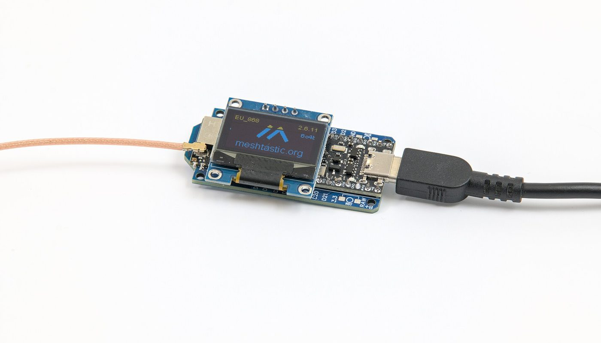
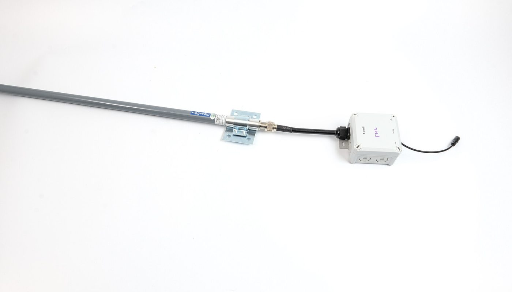

Réseau maillé hors-ligne · aucun lien affilié sur cette page · sources relevées le 2 oct. 2026
Meshtastic : une carte LoRa à 22,95 € pour communiquer sans réseau — et pourquoi l'appareil prêt à l'emploi à 47,99 € n'est pas toujours le mauvais calcul

Meshtastic est un firmware libre (GPL-3.0) qui transforme une carte LoRa à 22,95 € et votre téléphone en réseau de messagerie chiffré, sans tour cellulaire, sans WiFi et sans internet. Le projet est massif : 8 366 étoiles sur GitHub, 26 régions LoRa, 39 langues. Mais le discours DIY cache un détail : la carte n'est pas un appareil. Un tracker prêt à l'emploi se relève à 47,99 €, et le même modèle coûte 53,55 € chez un autre revendeur le même jour.
Aucun lien affilié sur cette page — voir comment ça marche Prix lus le 2 oct. 2026
En bref
- Le projet est libre et massif. Le dépôt public meshtastic/firmware comptait 8 366 étoiles, 2 786 forks et 473 contributeurs le 2 octobre 2026, sous licence GPL-3.0 ; le site officiel annonce 26 régions LoRa et 39 langues.
- Le point d'entrée est une carte. La carte de développement la moins chère que nous ayons relevée — Heltec WiFi LoRa 32 V3, version EU868 — est à 22,95 € chez un revendeur européen, le 2 oct. 2026.
- Un appareil fini coûte plus du double. Le tracker SenseCAP T1000-E (EU868), boîtier, antenne, batterie et GPS inclus, est relevé à 47,99 € chez un revendeur et 53,55 € chez un autre le même jour — soit 5,56 € d'écart pour le même produit.
- Le « 22,95 € » n'est pas complet : il faut ajouter l'antenne 868 MHz (9,95 €), une batterie (13,95 €) et un boîtier — nous ne chiffrons pas le boîtier, faute de l'avoir relevé.
- Étendre la portée coûte plus cher que le point d'accès : un répéteur solaire se relève à 107,00 € (WisMesh Repeater Mini) et 119,00 € (SenseCAP Solar Node P1-Pro)
De quoi on parle exactement
Meshtastic n'est pas une application : c'est un firmware qu'on installe sur une carte radio bon marché équipée d'une puce LoRa. Une fois installé, la carte devient un nœud d'un réseau maillé : chaque appareil relaie les messages des autres, sans opérateur ni point d'accès. Le téléphone sert d'écran et de clavier, par Bluetooth ou par le client web.
Le projet revendique aussi le chiffrement AES-256 des messages et une portée de plusieurs kilomètres — ce sont ses chiffres, annoncés par lui, pas une mesure faite ici. Trois conséquences pratiques que les guides oublient de dire :
- La carte n'est pas un appareil. Une carte de développement arrive nue : ni antenne, ni batterie, ni boîtier. C'est ce qui explique l'écart avec un tracker prêt à l'emploi, qui intègre tout.
- Il faut flasher le firmware. Le projet fournit un flasher en ligne et la carte se programme par câble USB. Rien de difficile, mais la première installation demande un ordinateur.
- La documentation est excellente, mais en anglais et portée par une communauté : c'est un projet libre, pas un service client.
Les prix : ce qui est lu, où, et quand
Les montants ci-dessous ont été relevés le 2 octobre 2026 sur les fiches produits des revendeurs. Les prix en euros viennent de deux boutiques européennes (Hexaspot, Paradisetronic) ; les prix en dollars viennent de la boutique du fabricant RAK, dont la devise affichée est le dollar (vérifié le 2 oct. 2026). Nous ne convertissons pas d'une devise à l'autre, et nous n'inventons rien.
Ce que coûte un point d'entrée Meshtastic (€, prix relevés le 2 oct. 2026)
Barres proportionnelles aux montants ci-dessus, base à zéro. Les deux lignes « carte + antenne » et « kit de démarrage » sont des ensembles que nous avons additionnés ou relevés tels quels, jamais des estimations : la ligne carte + antenne est la somme de la carte Heltec (22,95 €) et de l'antenne 868 MHz (9,95 €) relevées le même jour chez le même revendeur. Les prix de la boutique RAK, en dollars, n'apparaissent pas dans ce graphique en euros : ils figurent dans le tableau.
| Où | Quoi | Prix relevé le 2 oct. 2026 | Ce que le prix ne comprend pas |
|---|---|---|---|
| Hexaspot (EU, €) | Carte Heltec WiFi LoRa 32 V3, ESP32-S3 + SX1262, EU868 | 22,95 € | antenne, batterie, boîtier, câble |
| Hexaspot (EU, €) | Antenne Meshtastic/LoRa 2,6 dBi (EU868) | 9,95 € | pigtail selon la carte |
| Hexaspot (EU, €) | Batterie Li-Po Heltec 3 000 mAh | 13,95 € | boîtier |
| Hexaspot (EU, €) | Kit de démarrage WisMesh RAK3312 (EU868) | 28,75 € | boîtier selon l'usage |
| Hexaspot (EU, €) | Tracker SenseCAP Card T1000-E pour Meshtastic (EU868) | 47,99 € | rien à assembler — appareil fini |
| Paradisetronic (EU, €) | Même tracker Seeed SenseCAP T1000-E | 53,55 € | même produit, autre boutique |
| Hexaspot (EU, €) | Répéteur solaire WisMesh Repeater Mini (IP67) | à partir de 99,95 € (107,00 € en V1) | mât, fixation non comprise |
| Hexaspot (EU, €) | Station WisMesh basée Raspberry Pi (EU868) | 181,00 € (189,00 € en 1 W) | alimentation selon la version |
| RAK (boutique, $) | WisMesh Tag — tracker GPS de poche | 39,00 $ | devise USD, port et taxes d'import à prévoir |
| RAK (boutique, $) | WisMesh Pocket V2 — appareil prêt à l'emploi | 89,97 $ | devise USD, port et taxes d'import à prévoir |
| RAK (boutique, $) | WisMesh Station (Raspberry Pi, Meshtastic) | 169,99 $ (175,99 $ en 1 W) | devise USD, port et taxes d'import à prévoir |
Un point qui change la lecture du budget : le même appareil fini se relève à deux prix selon la boutique. Le tracker SenseCAP T1000-E (EU868) vaut 47,99 € chez un revendeur européen et 53,55 € chez un autre, le même jour — soit 5,56 € d'écart pour un produit identique. Et chez le fabricant RAK, qui vend en dollars, un tracker équivalent part à 39,00 $. Comparer les boutiques avant de commander est donc aussi rentable que de choisir le montage le moins cher.
Le vrai écart n'est pas celui qu'on croit
La présentation habituelle compare la carte DIY au produit fini, et conclut à une économie spectaculaire. C'est exact — et incomplet. La carte à 22,95 € n'a ni antenne, ni batterie, ni boîtier : une fois ces trois postes ajoutés (9,95 € + 13,95 € + un boîtier que nous ne chiffrons pas), l'écart avec un tracker fini à 47,99 € se resserre nettement.
Ce que le DIY apporte en échange, ce n'est pas le prix : c'est le contrôle.
Ce que 22,95 € achètent, et ce qu'un appareil fini ajoute
Le second écart est celui du haut de gamme : étendre un réseau — un répéteur solaire à 107,00 à 119,00 €, une station à 181,00 € — coûte plus cher que le point d'accès lui-même. C'est logique (un répéteur, c'est une carte, un panneau solaire, une batterie et un boîtier étanche), mais aucun guide ne le dit aussi directement.
La différence, en une phrase
Une carte à 22,95 € est un composant : vous la montez, vous la flashez, vous achetez le reste. Un tracker à 47,99 € est un objet : vous l'allumez. Ce n'est pas le même achat, même si les deux font partie du même réseau.
Ce que les guides oublient de dire

- Toutes les cartes ne se valent pas. La documentation officielle recommande explicitement les puces Semtech SX126x ou LR11xx plutôt que les anciennes : « We strongly recommend choosing devices equipped with the newer Semtech SX126x or LR11xx series », écrit le projet. Une carte bon marché à ancienne puce fonctionne, mais elle est déconseillée par le projet lui-même.
- Le prix affiché n'est pas le prix payé. La boutique du fabricant RAK facture en dollars : port et taxes d'import s'ajoutent. Deux revendeurs européens vendent le même tracker à 47,99 € et 53,55 €. Le total dépend donc de la boutique autant que du modèle.
- La portée « plusieurs kilomètres » est une annonce du projet, pas une mesure. Elle dépend du relief, des obstacles et de l'antenne — un nœud au fond d'une vallée portera beaucoup moins qu'un nœud en crête.
- Compter le boîtier et l'alimentation. Un nœud extérieur (comme celui de la photo) demande un boîtier étanche et souvent un panneau solaire : nous avons chiffré le répéteur solaire (107,00 à 119,00 €) mais pas le boîtier d'un nœud DIY — nous ne l'avons pas relevé, donc nous ne l'estimons pas.
- Le firmware est un projet communautaire. Documentation en anglais, mises à jour fréquentes, pas de service client : c'est le prix de la liberté du projet GPL-3.0.
- Ce n'est pas un réseau de téléphonie. Meshtastic transporte de courts messages et des positions, pas des appels ni de la vidéo : un réseau maillé LoRa a un débit très faible, c'est ce qui lui permet de tenir sur une batterie.
Trois chemins, selon ce que vous voulez faire
Aucun de ces trois chemins n'est « le bon ». Le seul achat vraiment coûteux est de commander une carte en croyant recevoir un appareil prêt à l'emploi — ou l'inverse.
La checklist avant de commander
- Vérifier la bande : en Europe, cherchez la mention EU868. Un appareil annoncé en 915 MHz est destiné à d'autres régions et ne convient pas ici.
- Vérifier la puce radio : la documentation du projet recommande les SX126x / LR11xx. Une carte qui ne précise pas sa puce est un risque.
- Choisir carte ou appareil : assembler (22,95 € + antenne + batterie + boîtier) ou acheter fini (47,99 €). Le second évite toute la partie soudure, alimentation et étanchéité.
- Comparer les boutiques : le même tracker se relève à 47,99 € et 53,55 €. Vérifiez aussi le port et, hors UE, les taxes d'import.
- Penser à l'antenne : elle n'est jamais incluse avec une carte nue. Celle du revendeur est relevée à 9,95 €.
- Prévoir le boîtier et l'alimentation si le nœud doit tenir dehors — c'est le poste le plus souvent oublié, et nous ne l'avons pas chiffré.
- Vérifier le canal avant d'acheter en groupe : tous les nœuds d'un même réseau doivent utiliser la même bande et les mêmes réglages régionaux.
Par où commencer, concrètement
Ces liens sont ceux du projet et des revendeurs cités. Aucun n'est affilié : ils sont là pour que vous vérifiiez les prix et les spécifications à la source.
- Comprendre le projet : meshtastic.org et sa liste des cartes supportées — dont les deux appareils cités ici.
- Installer le firmware : guide de démarrage et flasher en ligne, depuis un navigateur.
- Voir une carte et son prix : Heltec WiFi LoRa 32 V3 chez Hexaspot (22,95 € le 2 oct. 2026) et le tracker T1000-E (47,99 €).
- Voir le même tracker ailleurs : T1000-E chez Paradisetronic (53,55 € le 2 oct. 2026) — et la boutique RAK, en dollars, pour la gamme WisMesh.
- Vérifier la licence : le projet est en GPL-3.0.
Le réflexe qui évite le mauvais achat : décidez d'abord si vous voulez assembler ou utiliser. Si vous voulez un appareil qui marche ce soir, achetez-le fini ; si vous voulez comprendre et économiser sur la durée, partez de la carte — mais comptez l'antenne, la batterie et le boîtier.
Questions
Meshtastic fonctionne-t-il sans internet ?
Oui, c'est son principe : les appareils se relaient entre eux par radio LoRa, sans tour cellulaire, WiFi ni internet. La page d'accueil du projet le résume ainsi. La portée annoncée (plusieurs kilomètres) dépend du relief et de l'antenne.
Faut-il savoir programmer ?
Non pour l'usage courant. On flashe le firmware une fois, puis on règle tout depuis l'application iOS, Android ou le client web. Les appareils prêts à l'emploi arrivent déjà flashés.
Une carte à 22,95 € suffit-elle pour communiquer ?
Il faut au minimum la carte (22,95 €), une antenne (9,95 €) et une alimentation ou batterie (13,95 €). Pour un nœud extérieur, ajoutez un boîtier étanche — que nous ne chiffrons pas, faute de l'avoir relevé.
Pourquoi le même appareil est-il vendu 47,99 € et 53,55 € ?
Parce que ce sont deux boutiques distinctes, avec leurs frais et leur port. Nous avons relevé les deux prix le 2 octobre 2026 : comparer la boutique fait partie de l'achat.
Cette page contient-elle des liens affiliés ?
Non, aucun à ce jour. Le programme d'affiliation AliExpress (cartes et matériel importé) est enregistré chez nous comme candidat — aucun compte créé, aucun lien posé. Si cela change, le lien sera étiqueté et cet encadré mis à jour.
Comment cette page est faite
- Aucun lien affilié ici. Le programme d'affiliation AliExpress est enregistré comme candidat dans nos registres : aucun compte n'est créé et aucun lien n'est posé. Si un lien affilié arrive, il sera étiqueté « lien affilié » à l'endroit où il apparaît, avec
rel="sponsored", et cet encadré sera mis à jour avec la date. - Les prix sont ceux que nous avons lus nous-mêmes sur les fiches produits des revendeurs, le 2 octobre 2026. Nous ne convertissons pas les dollars en euros et nous ne mélangeons pas les deux devises dans le graphique.
- Ce que nous ne savons pas est écrit comme tel : le prix d'un boîtier étanche pour un nœud DIY n'est pas relevé, donc il n'est estimé nulle part ; la portée réelle selon le terrain n'est pas mesurée.
- Nous ne fabriquons aucun avis, aucun témoignage et aucune statistique. Les chiffres du projet (étoiles, forks, contributeurs) viennent de l'interface publique de GitHub, datés ; les régions et langues viennent du site officiel.
- Corrections : si un prix a changé ou si nous nous sommes trompés, écrivez-nous, nous corrigeons et nous datons la correction.
Sources
- Dépôt public meshtastic/firmware (GPL-3.0, 8 366 étoiles, 2 786 forks, 473 contributeurs, 454 tickets ouverts, dernière poussée 2 oct. 2026, langage C++) — lu via l'API GitHub le 2 octobre 2026.
- Site officiel meshtastic.org : devise du projet (« réseau maillé décentralisé, hors réseau »), chiffrement AES-256, portée de plusieurs kilomètres annoncée, 26 régions LoRa, 39 langues — lu le 2 octobre 2026.
- Documentation « Supported Hardware Overview » (meshtastic.org/docs/hardware/devices) : recommandation des puces Semtech SX126x / LR11xx — lue le 2 octobre 2026.
- Boutique Hexaspot (revendeur européen, prix en euros) : carte Heltec WiFi LoRa 32 V3 EU868 22,95 € ; antenne 868 MHz 9,95 € ; batterie Heltec 3 000 mAh 13,95 € ; kit WisMesh RAK3312 28,75 € ; tracker SenseCAP T1000-E EU868 47,99 € ; répéteur solaire WisMesh Repeater Mini à partir de 99,95 € (107,00 € en V1) ; station WisMesh Raspberry Pi 181,00 € — relevés le 2 octobre 2026.
- Boutique Paradisetronic (revendeur européen, prix en euros) : tracker Seeed SenseCAP T1000-E à 53,55 € — relevé le 2 octobre 2026.
- Boutique du fabricant RAK (store.rakwireless.com, devise USD confirmée sur la page) : WisMesh Tag 39,00 $ ; WisMesh Pocket V2 89,97 $ ; WisMesh Station 169,99 $ (175,99 $ en version 1 W) — relevés le 2 octobre 2026.
- Photos : nœud Meshtastic avec écran OLED et nœud extérieur sur mât — toutes deux de -stk, CC BY-SA 4.0, via Wikimedia Commons.
Avis clients
Avis sur ce guide, publiés après vérification. Chaque avis négatif reçoit une réponse publique — c'est comme ça qu'on s'améliore.
Les premiers avis seront publiés ici dès que de vrais lecteurs en enverront.